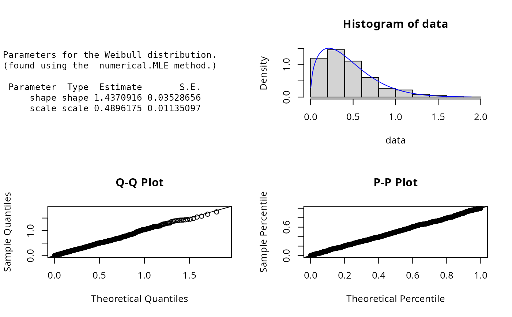

Density, distribution, quantile, random number
generation, and parameter estimation functions for the Weibull distribution with parameters shape and
scale. Parameter estimation can be based on a weighted or unweighted i.i.d sample and can be carried out analytically
or numerically.
dWeibull(x, shape = 2, scale = 2, params = list(shape = 2, scale = 2))
pWeibull(q, shape = 2, scale = 2, params = list(shape = 2, scale = 2))
qWeibull(p, shape = 2, scale = 2, params = list(shape = 2, scale = 2))
rWeibull(n, shape = 2, scale = 2, params = list(shape = 2, scale = 2))
eWeibull(X, w, method = c("numerical.MLE", "moments"), ...)
lWeibull(
X,
w,
shape = 2,
scale = 2,
params = list(shape = 2, scale = 2),
logL = TRUE
)A vector of quantiles.
Shape parameter.
Scale parameter.
A list that includes all named parameters
A vector of probabilities.
Number of observations.
Sample observations.
An optional vector of sample weights.
Parameter estimation method.
Additional parameters.
logical; if TRUE, lWeibull gives the log-likelihood, otherwise the likelihood is given.
dWeibull gives the density, pWeibull the distribution function, qWeibull the quantile function, rWeibull generates random deviates, and eWeibull estimates the distribution parameters. lWeibull provides the log-likelihood function.
The Weibull distribution is a special case of the generalised gamma distribution. The dWeibull(), pWeibull(),
qWeibull(),and rWeibull() functions serve as wrappers of the standard dweibull,
pweibull, qweibull, and rweibull functions with
in the stats package. They allow for the parameters to be declared not only as
individual numerical values, but also as a list so parameter estimation can be carried out.
The Weibull distribution with parameters shape=\(a\) and scale=\(b\) has probability density function,
$$f(x)= (a/b)(x/b)^{a-1}exp(-(x/b)^a)$$
for \(x >0\). Parameter estimation can be carried out using the method of moments as done by Winston (2003) or by numerical
maximum likelihood estimation.
The log-likelihood function of the Weibull distribution is given by
$$l(a,b|x) = n(ln a - ln b) + (a-1)\sum ln(xi/b) - \sum(xi/b)^{a}$$
The score function and information matrix are as given by Rinne (p.412).
Johnson, N. L., Kotz, S. and Balakrishnan, N. (1995) Continuous Univariate Distributions,
volume 1, chapter 21, Wiley, New York.
Rinne, H. (2009) The Weibull Distribution A Handbook, chapter 11, Chapman & Hall/CRC.
Winston, W.L (2003) Operations Research: Applications and algorithms, 4th Ed, Duxbury.
ExtDist for other standard distributions.
# Parameter estimation for a distribution with known shape parameters
X <- rWeibull(n=1000, params=list(shape=1.5, scale=0.5))
est.par <- eWeibull(X=X, method="numerical.MLE"); est.par
#>
#> Parameters for the Weibull distribution.
#> (found using the numerical.MLE method.)
#>
#> Parameter Type Estimate S.E.
#> shape shape 1.4370916 0.03528656
#> scale scale 0.4896175 0.01135097
#>
#>
plot(est.par)

# Fitted density curve and histogram
den.x <- seq(min(X),max(X),length=100)
den.y <- dWeibull(den.x,shape=est.par$shape,scale=est.par$scale)
hist(X, breaks=10, col="red", probability=TRUE, ylim = c(0,1.1*max(den.y)))
lines(den.x, den.y, col="blue", lwd=2) # Original data
lines(density(X), lty=2) # Fitted curve
# Extracting shape and scale parameters
est.par[attributes(est.par)$par.type=="shape"]
#> $shape
#> [1] 1.437092
#>
est.par[attributes(est.par)$par.type=="scale"]
#> $scale
#> [1] 0.4896175
#>
# Parameter Estimation for a distribution with unknown shape parameters
# Example from: Rinne (2009) Dataset p.338 and example pp.418-419
# Parameter estimates are given as shape = 2.5957 and scale = 99.2079.
data <- c(35,38,42,56,58,61,63,76,81,83,86,90,99,104,113,114,117,119,141,183)
est.par <- eWeibull(X=data, method="numerical.MLE"); est.par
#>
#> Parameters for the Weibull distribution.
#> (found using the numerical.MLE method.)
#>
#> Parameter Type Estimate S.E.
#> shape shape 2.59566 0.4366932
#> scale scale 99.20792 9.0404336
#>
#>
plot(est.par)
# log-likelihood function
lWeibull(data, param = est.par)
#> [1] -99.52644
# evaluate the precision of estimation by Hessian matrix
H <- attributes(est.par)$nll.hessian
var <- solve(H)
se <- sqrt(diag(var));se
#> shape scale
#> 0.4366932 9.0404336